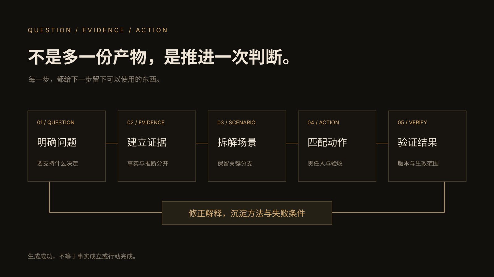

我曾在一版研究里看到自己的问题被扩写成了完整章节，却没有得到答案。我又强调了一次：“这是我提出的问题，不是让你又描述一遍。”
这句话也提醒我：报告、PRD、对比表和 Demo 是承载判断的形式。开始工作前，更值得先问，谁要据此做什么决定，什么证据能支持决定，哪些未知会改变选择。
研究的对象，要具体到机制
一个竞品可以生成服务策略，我要继续问：它调用什么动作，谁授权，系统是否接通，结果如何确认？有了一个命名完整的模块，不代表机制已经回答这些问题，也不能直接据此判断自己的产品缺少能力。
材料不足时，把未知保留下来。愿景、机制与效果是不同层次，不能通过一段流畅描述把它们连成已经成立的结论。

把证据放到正确的层级
先明确时间、样本、统计单位和定义。
解释当时发生的行为，再与配置、上下文和执行事实核对。
提出可检查的假设，不能直接升级为业务根因。
一轮交互与一通会话，不能共用去重逻辑；接口调用次数与被服务的会话数，也不是同一种规模。先找对分析单位，再讨论数字变化，否则算得精确，也可能回答了另一个问题。
只有文本的记录，不足以解释图片触发的判断；离线相似度，也不能直接证明线上没有召回已有知识。需要的证据应与要判断的问题对应。“还不能证明”应该进一步说明，补什么之后可以继续判断。
像写测试用例一样澄清需求
“支持 AI 建单”只是开始。谁在什么条件下进入，缺信息如何补，重复进入怎么办，失败由谁接续，什么时候能说成功，才会改变最终用户的结果。
保存草稿 ≠ 正式提交
字段预填完成了，可能仍需检查和提交。申请创建成功了，通知或备注失败，也不能随意把整个申请说成失败。主动作与副作用要分开，完成状态也要按承担的任务定义。
验证，必须与实现一起设计
不能在方案末尾写一句“做实验”，就把实现难题留给研发。需要知道改了什么、谁实际受到变化、生效时点与版本怎样对应、观察多久，以及能否回退。
如果只保存最新配置，就无法继续运行原配置作为比较；如果知识、权限和路由同时变化，也很难解释哪个变化产生作用。实验、分批上线与观察性分析各有条件，选择方式需要结合产品实现。
简单前后变化可以提供线索，却不自动构成因果证明。样本构成、其他发布和统计定义的变化，都可能影响读数。
从问题到任务，还差一次责任转换
问题与证据 → 可改变的环节 → 责任人和动作 → 验收结果
同样是“无法解决”，可能需要补知识、修召回、改对话推进，也可能依赖外部系统或必要人工判断。优先级也不只按问题量排序，还要考虑后果、证据把握、可改变程度和实施成本。
让 AI 扩大执行与检查能力
我会让 AI 读取资料、复算数据、整理初稿、枚举分支和寻找矛盾，同时写清输入、允许的动作、不能推断的事实和停止条件。先完成一个可检查的版本，再追加内容，能够更早暴露方向偏差。
验证要落到最终产物：脚本没报错，不等于没有重复计数；文档保存了，不等于正文没遗漏；页面能打开，也不等于排版没有溢出。
沉淀方法时，除了结果，还要保留适用条件、被推翻的解释、异常处理与核验办法。下一次才能知道方法为什么这样设计，什么时候需要重新检查。
生成越来越容易。我的注意力，更应该留给事实是否成立、行动是否发生，以及结果怎样被确认。
在产品迭代里，让分析真正改变下一步
在拼多多的智能客服与服务体验工作中，我参与建设数据监控和业务问题分析机制，协同数据团队输出体验分析，并通过 A/B 测试与反馈验证产品优化。分析需要帮助团队决定优先改哪里，再连接到方案、协作与验收；它也构成了我今天这套工作方法的实践背景。
查看物流协作与工单案例 →